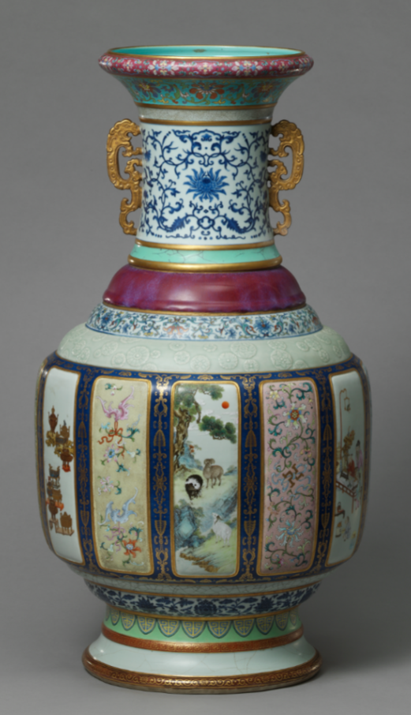
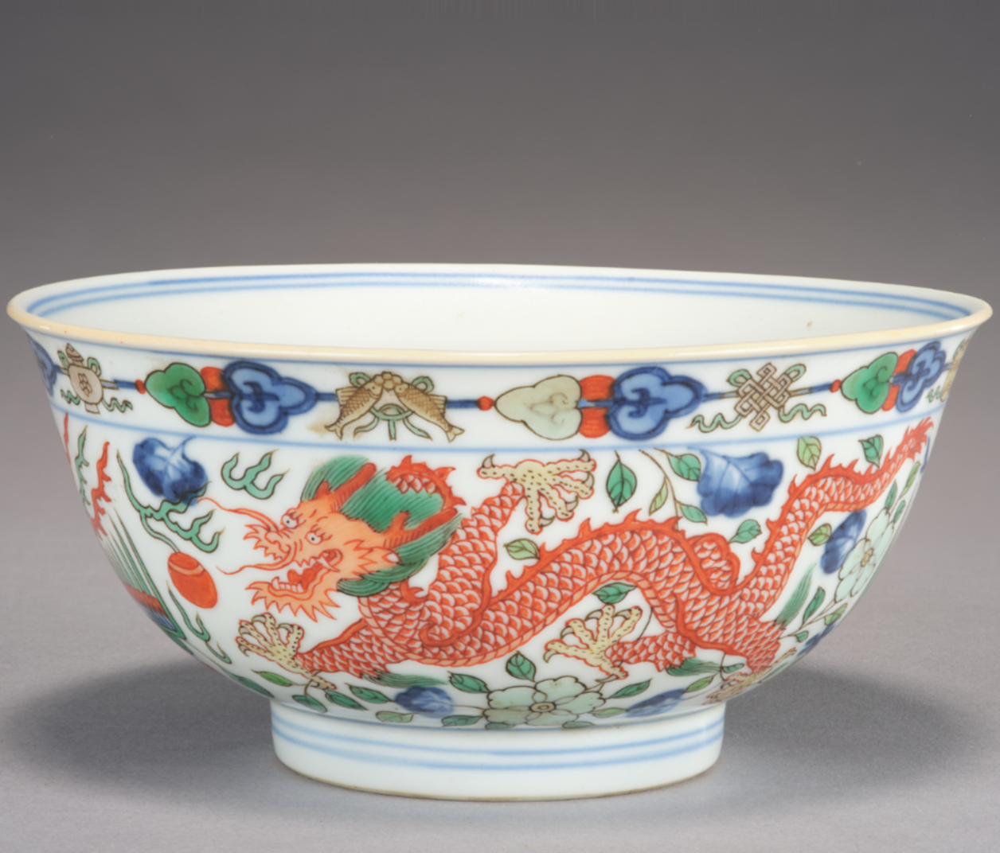
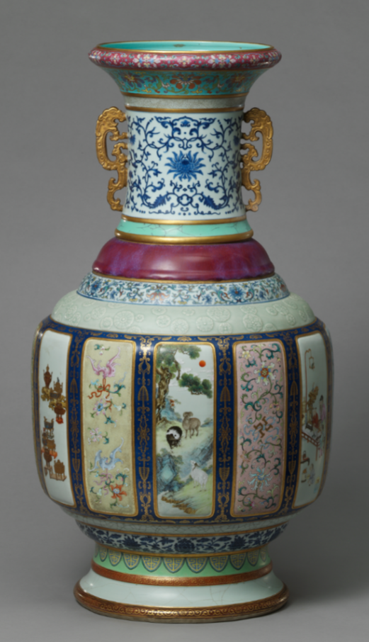
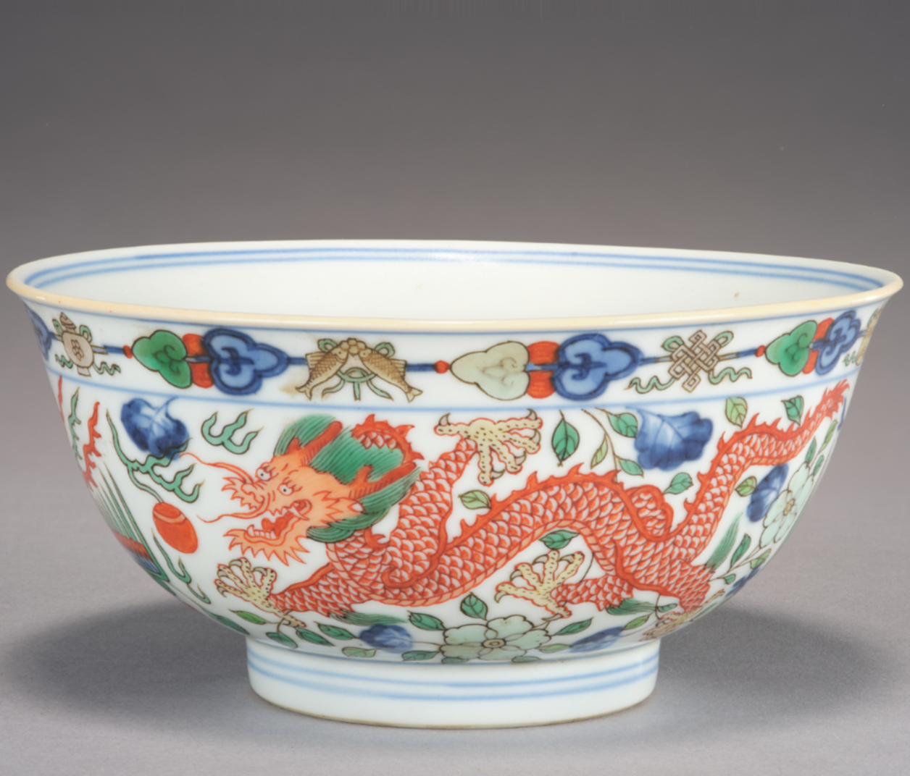
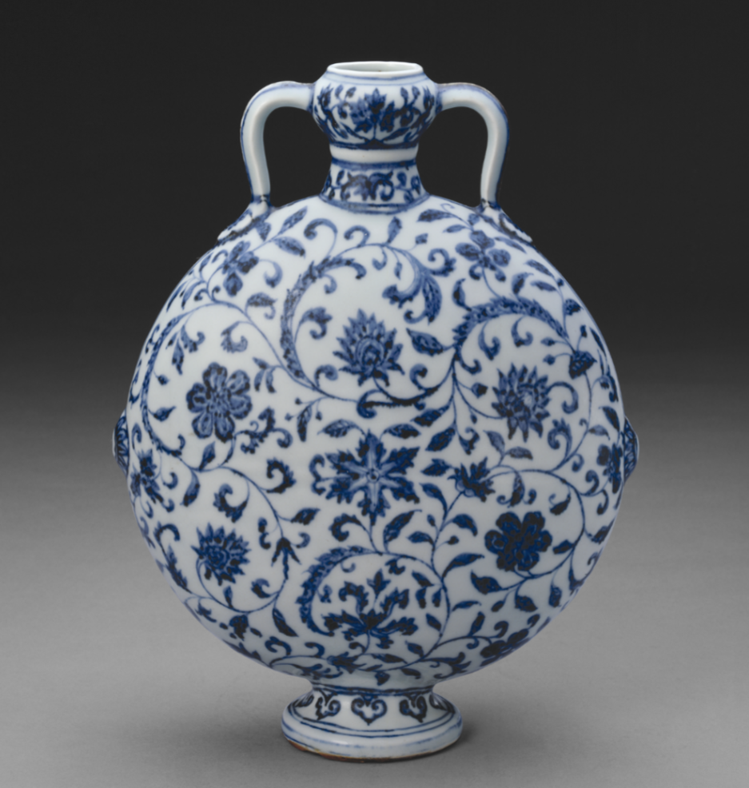

彩瓷亦称“彩绘瓷”（painted china），器物表面中加以彩绘的瓷器。主要有釉下彩瓷和釉上彩瓷两大类，釉下彩始于三国时期东吴釉下彩绘瓷。唐代有唐青花，以及长沙窑等釉下彩绘瓷。明清时期开始出现釉上彩（粉彩），同时也是彩瓷发展的盛期，以景德镇窑成就最为突出。


彩瓷亦称“彩绘瓷”（painted china），器物表面中加以彩绘的瓷器。主要有釉下彩瓷和釉上彩瓷两大类，釉下彩始于三国时期东吴釉下彩绘瓷。唐代有唐青花，以及长沙窑等釉下彩绘瓷。明清时期开始出现釉上彩（粉彩），同时也是彩瓷发展的盛期，以景德镇窑成就最为突出。


青花瓷（blue and white porcelain），又称白地青花瓷，常简称青花，是中国瓷器的主流品种之一，属釉下彩瓷。青花瓷是用含氧化钴的钴矿为原料，在陶瓷坯体上描绘纹饰，再罩上一层透明釉，经高温还原焰一次烧成。钴料烧成后呈蓝色，具有着色力强、发色鲜艳、烧成率高、呈色稳定的特点。原始青花瓷于唐宋已见端倪，成熟的青花瓷则出现在元代景德镇的湖田窑。明代青花成为瓷器的主流。明宣德时发展到了顶峰。明清时期，还创烧了青花五彩、孔雀绿釉青花、豆青釉青花、青花红彩、黄地青花、哥釉青花等衍生品种。
